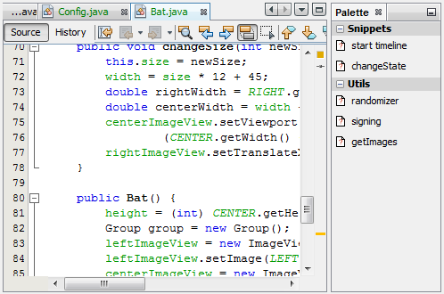

Apache NetBeans
Apache NetBeansLatest release
NetBeans Editor Component Palette Module Tutorial
| This tutorial needs a review. You can edit it in GitHub following these contribution guidelines. |
This tutorial demonstrates how to create a component palette that provides drag-and-drop code snippets for a new file type. Code snippets serve to speed up coding. The IDE provides a component palette for JSP files, HTML files, and Form files. In this tutorial, you learn how to create a component palette for Java source files.
For troubleshooting purposes, you are welcome to download the completed tutorial source code.
Introduction to Component Palettes
In this tutorial, you implement several classes provided by the NetBeans Palette API. Then you register the new component palette in the layer.xml file, for the text/x-java MIME type. The palette that you create in this way will only be visible if a Java source file is open.
If you do not want to create a new component palette, but only want to add a code snippet to an existing component palette, see the NetBeans Code Snippet Module Tutorial.
Setting up the Module Project
Before you start writing the module, you have to make sure you that your project is set up correctly. The IDE provides a wizard that sets up all the basic files needed for a module.
-
Choose File > New Project (Ctrl+Shift+N). Under Categories, select NetBeans Modules. Under Projects, select Module. Click Next.
-
In the Name and Location panel, type
JavaSourceFilePalettein the Project Name field. Change the Project Location to any directory on your computer. Click Next.
-
In the Basic Module Configuration panel, type
org.netbeans.modules.javasourcefilepalettein Code Name Base. Click Finish.
The IDE creates the JavaSourceFilePalette project. The project contains all of your sources and project metadata, such as the project’s Ant build script. The project opens in the IDE. You can view its logical structure in the Projects window (Ctrl-1) and its file structure in the Files window (Ctrl-2).
Creating the Component Palette and Code Snippets
Specifying the Module’s Dependencies
You will need to subclass several classes that belong to NetBeans APIs. Each has to be declared as a module dependency. Use the Project Properties dialog box for this purpose, as described below.
-
In the Projects window, right-click the
JavaSourceFilePaletteproject node and choose Properties. In the Project Properties dialog box, click Libraries.
1. For each of the following APIs, click "Add…", select the name from the Module list, and then click OK to confirm it:
-
Common Palette
-
Dialogs API
-
Lookup API
-
MIME Lookup API
-
Nodes API
-
Text API
-
UI Utilities API
-
Utilities API
-
Click OK to exit the Project Properties dialog box.
-
In the Projects window, expand the Important Files node, double-click the Project Metadata node, and note the long list of APIs that you selected have been declared as module dependencies.
Integrating with the Component Palette
Component Palettes are defined by the NetBeans Component Palette API. The NetBeans Component Palette API consists of the following APIs:
| File | Description |
|---|---|
Creates a new instance of the Component Palette. To do so, it invokes the |
|
Provides access to data in the Component Palette. |
|
Provides the actions on the palette, categories, and items in the palette. |
|
Controls whether a category or item is displayed in the palette. |
To use the Palette API to create the palette in this tutorial, take the following steps:
-
Right-click the
JavaSourceFilePaletteproject node and choose New > Java Class. Create a Java file calledJavaSourceFileLayerPaletteFactory.
-
Replace the default content of the
JavaSourceFileLayerPaletteFactory.javafile with the following:
package org.netbeans.modules.javasourcefilepalette;
import java.io.IOException;
import javax.swing.Action;
import org.netbeans.api.editor.mimelookup.MimeRegistration;
import org.netbeans.spi.palette.DragAndDropHandler;
import org.netbeans.spi.palette.PaletteActions;
import org.netbeans.spi.palette.PaletteController;
import org.netbeans.spi.palette.PaletteFactory;
import org.openide.util.Exceptions;
import org.openide.util.Lookup;
import org.openide.util.datatransfer.ExTransferable;
public class JavaSourceFileLayerPaletteFactory {
private static PaletteController palette = null;
@MimeRegistration(mimeType = "text/x-java", service = PaletteController.class)
public static PaletteController createPalette() {
try {
if (null == palette) {
return PaletteFactory.createPalette(
//Folder:
"JavaPalette",
//Palette Actions:
new PaletteActions() {
@Override public Action[] getImportActions() {return null;}
@Override public Action[] getCustomPaletteActions() {return null;}
@Override public Action[] getCustomCategoryActions(Lookup lkp) {return null;}
@Override public Action[] getCustomItemActions(Lookup lkp) {return null;}
@Override public Action getPreferredAction(Lookup lkp) {return null;}
},
//Palette Filter:
null,
//Drag and Drop Handler:
new DragAndDropHandler(true) {
@Override public void customize(ExTransferable et, Lookup lkp) {}
});
}
} catch (IOException ex) {
Exceptions.printStackTrace(ex);
}
return null;
}
}Creating the Code Snippets
Each code snippet requires the following files:
-
A Java class that defines the piece of code to be dragged into the Source Editor.
-
Optionally, a customizer where the user can specify something that will be added to the snippet, such as comments.
-
A properties file that defines the labels and tooltips.
-
A 16x16 pixel image for the 'Small Icon' display.
-
A 32x32 pixel image for the 'Big Icon' display.
After you have created or added the above files to the NetBeans module, you declare them in a resource declaration XML file, which you register in the NetBeans System Filesystem by using the layer.xml file, as follows:
<folder name="JavaPalette">
<folder name="Items">
<attr name="SystemFileSystem.localizingBundle" stringvalue="org.netbeans.modules.javasourcefilepalette.Bundle"/>
<file name="Item.xml" url="resources/Item.xml">
<attr name="SystemFileSystem.localizingBundle" stringvalue="org.netbeans.modules.javasourcefilepalette.Bundle"/>
</file>
</folder>
</folder>The above can be generated automatically for you if you use the @PaletteItemRegistration annotation, as shown below, in a package-info.java class:
@PaletteItemRegistration(
paletteid = "JavaPalette",
category = "Items",
itemid = "Comment",
icon32 = "org/netbeans/modules/javasourcefilepalette/BR32.png",
icon16 = "org/netbeans/modules/javasourcefilepalette/BR16.png",
body = "// new comment",
name = "New Comment",
tooltip = "// new comment")
package org.netbeans.modules.javasourcefilepalette;
import org.netbeans.spi.palette.PaletteItemRegistration;For all the details on the information referred to in this subsection, work through the NetBeans Code Snippet Module Tutorial.
Building and Installing the Module
The IDE uses an Ant build script to build and install your module. The build script is created for you when you create the module project.
-
In the Projects window, right-click the
JavaSourceFilePaletteproject and choose Run.
-
The IDE opens. Open a Java file. The palette opens at the same time. Drag snippets into the palette, a dialog opens, set a display name and other info, and you’ll see your snippet in the palette:

Next Steps
For more information about creating and developing NetBeans modules, see the following resources: